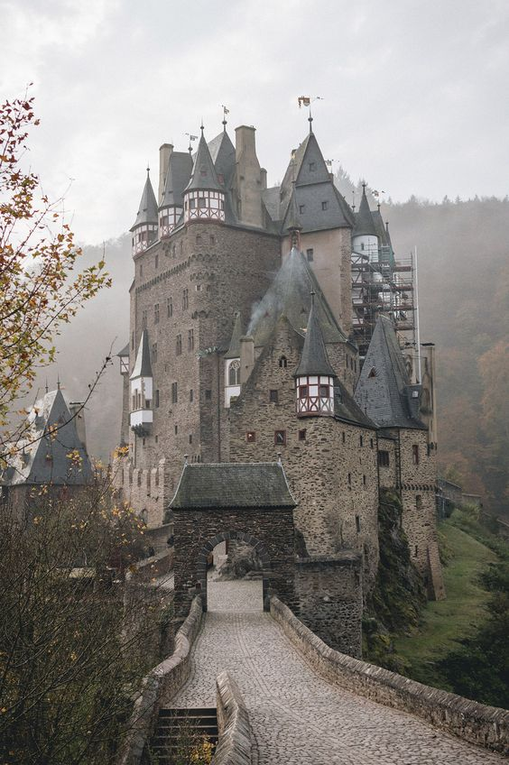

- ¿Cómo elijo el juego adecuado para mi grupo de amigos o familiares?
Elegir el juego adecuado depende de factores como la cantidad de jugadores, la duración que desean y sus preferencias de juego. En nuestra sección "Juego", ofrecemos descripciones detalladas para ayudarte a tomar una decisión informada. Si aún tienes dudas, no dudes en contactarnos para recibir recomendaciones personalizadas.
- ¿Puedo devolver o cambiar un juego si no estoy satisfecho?
Sí, tu satisfacción es nuestra prioridad. Si por alguna razón no estás satisfecho con tu compra, puedes devolver o cambiar el juego dentro de un plazo de 30 días desde la fecha de compra. Consulta nuestra política de devoluciones para obtener más detalles y seguir los pasos necesarios.
- ¿Ofrecen envíos internacionales?
¡Por supuesto! Entendemos que la pasión por los juegos de mesa no tiene fronteras. Ofrecemos envíos internacionales para que jugadores de todo el mundo puedan disfrutar de nuestros juegos. Al realizar la compra, simplemente selecciona tu ubicación y calcularemos los costos de envío y el tiempo estimado de entrega.
- ¿Cómo puedo estar al tanto de las últimas novedades y ofertas especiales?
Mantente conectado con Games siguiéndonos en nuestras redes sociales, como Facebook, Instagram y Twitter. También te invitamos a suscribirte a nuestro boletín informativo, donde recibirás actualizaciones sobre nuevos lanzamientos, promociones exclusivas y eventos especiales. ¡No te pierdas ninguna oportunidad de juego emocionante!
- ¿Cómo puedo organizar una noche de juegos con amigos utilizando sus juegos de mesa?
¡Organizar una noche de juegos con amigos es una excelente idea! Primero, elige uno o varios juegos de nuestra colección que se adapten al tamaño de tu grupo y a sus intereses. Asegúrate de leer las reglas con anticipación para estar preparado. Luego, crea un ambiente acogedor con bocadillos y bebidas. Puedes encontrar guías de juego en línea para ayudarte a explicar las reglas de manera clara. ¡Prepárate para una noche llena de risas y emoción! Si tienes alguna otra pregunta o necesitas más consejos sobre cómo organizar una noche de juegos exitosa, no dudes en contactarnos. Estamos aquí para asegurarnos de que tu experiencia de juego sea increíble desde el principio hasta el final.

Elegir el juego adecuado depende de factores como la cantidad de jugadores, la duración que desean y sus preferencias de juego. En nuestra sección "Juego", ofrecemos descripciones detalladas para ayudarte a tomar una decisión informada. Si aún tienes dudas, no dudes en contactarnos para recibir recomendaciones personalizadas.
Sí, tu satisfacción es nuestra prioridad. Si por alguna razón no estás satisfecho con tu compra, puedes devolver o cambiar el juego dentro de un plazo de 30 días desde la fecha de compra. Consulta nuestra política de devoluciones para obtener más detalles y seguir los pasos necesarios.
¡Por supuesto! Entendemos que la pasión por los juegos de mesa no tiene fronteras. Ofrecemos envíos internacionales para que jugadores de todo el mundo puedan disfrutar de nuestros juegos. Al realizar la compra, simplemente selecciona tu ubicación y calcularemos los costos de envío y el tiempo estimado de entrega.
Mantente conectado con Games siguiéndonos en nuestras redes sociales, como Facebook, Instagram y Twitter. También te invitamos a suscribirte a nuestro boletín informativo, donde recibirás actualizaciones sobre nuevos lanzamientos, promociones exclusivas y eventos especiales. ¡No te pierdas ninguna oportunidad de juego emocionante!
¡Organizar una noche de juegos con amigos es una excelente idea! Primero, elige uno o varios juegos de nuestra colección que se adapten al tamaño de tu grupo y a sus intereses. Asegúrate de leer las reglas con anticipación para estar preparado. Luego, crea un ambiente acogedor con bocadillos y bebidas. Puedes encontrar guías de juego en línea para ayudarte a explicar las reglas de manera clara. ¡Prepárate para una noche llena de risas y emoción! Si tienes alguna otra pregunta o necesitas más consejos sobre cómo organizar una noche de juegos exitosa, no dudes en contactarnos. Estamos aquí para asegurarnos de que tu experiencia de juego sea increíble desde el principio hasta el final.